Traces & annexes
Les preuves qui donnent corps aux compétences.
Photos terrain, supports, environnements digitaux et documents de mise en situation. Les éléments sensibles ont été exclus de la version publique.
Intersport
Merchandising, réimplantation et équipes.
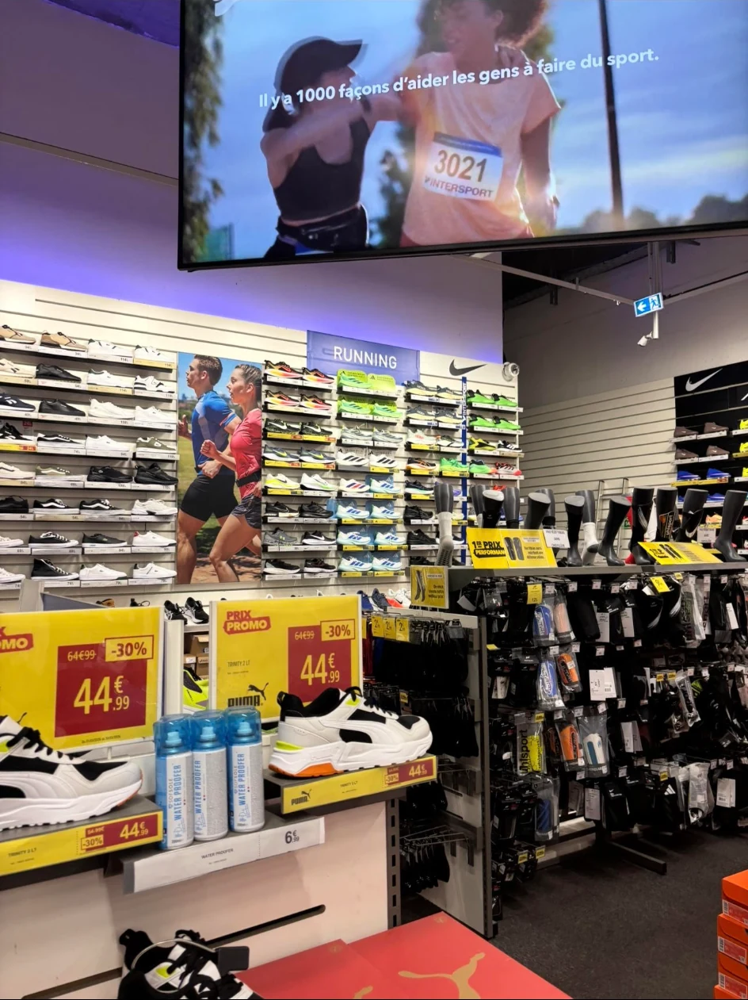


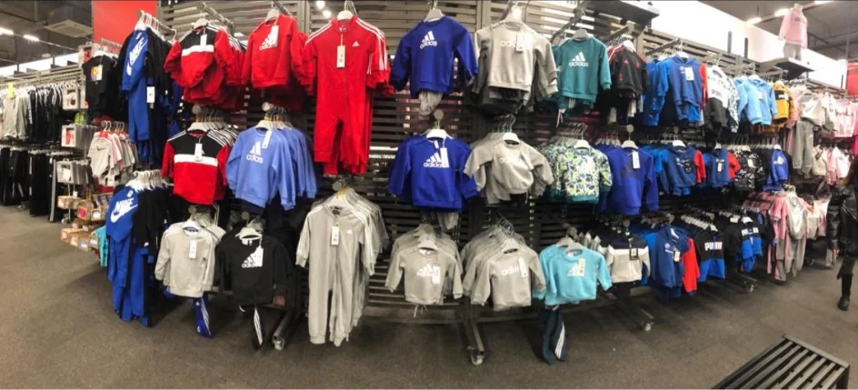
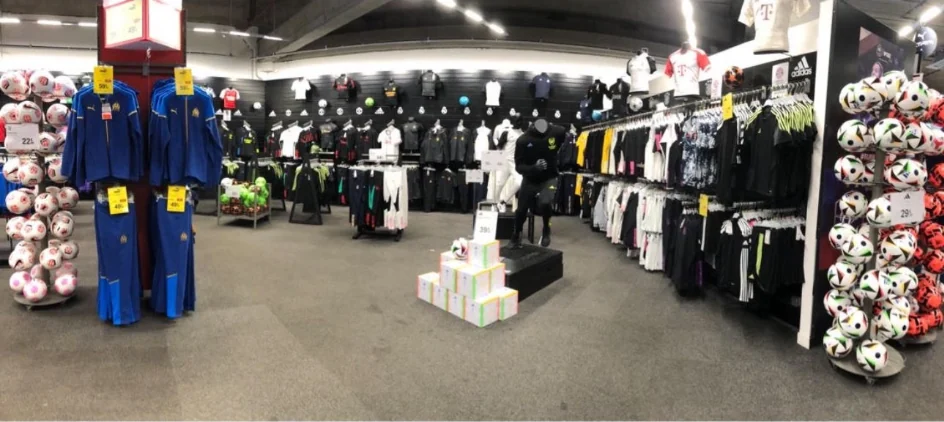
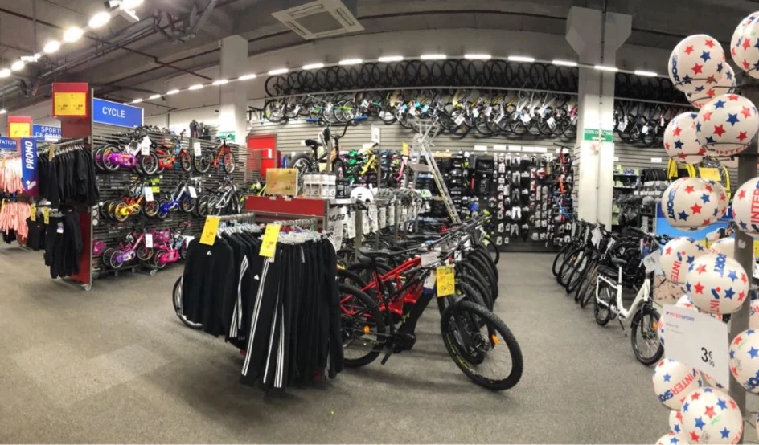
Manhattan Hot Dog
Commerce événementiel et gestion des flux.


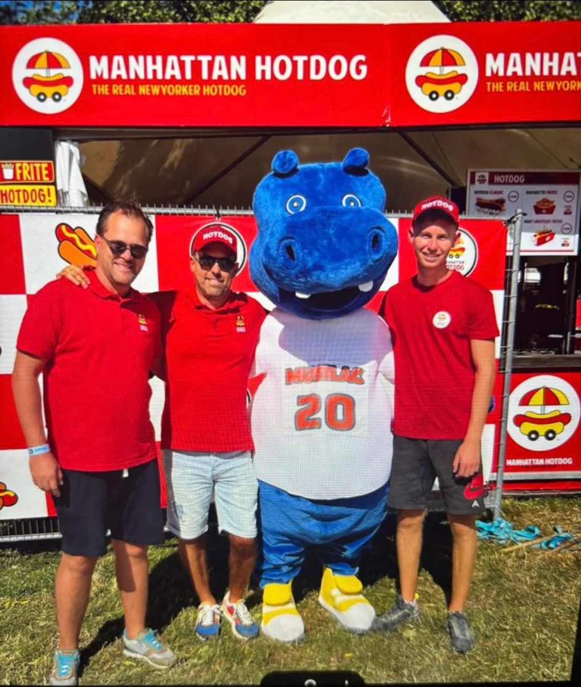
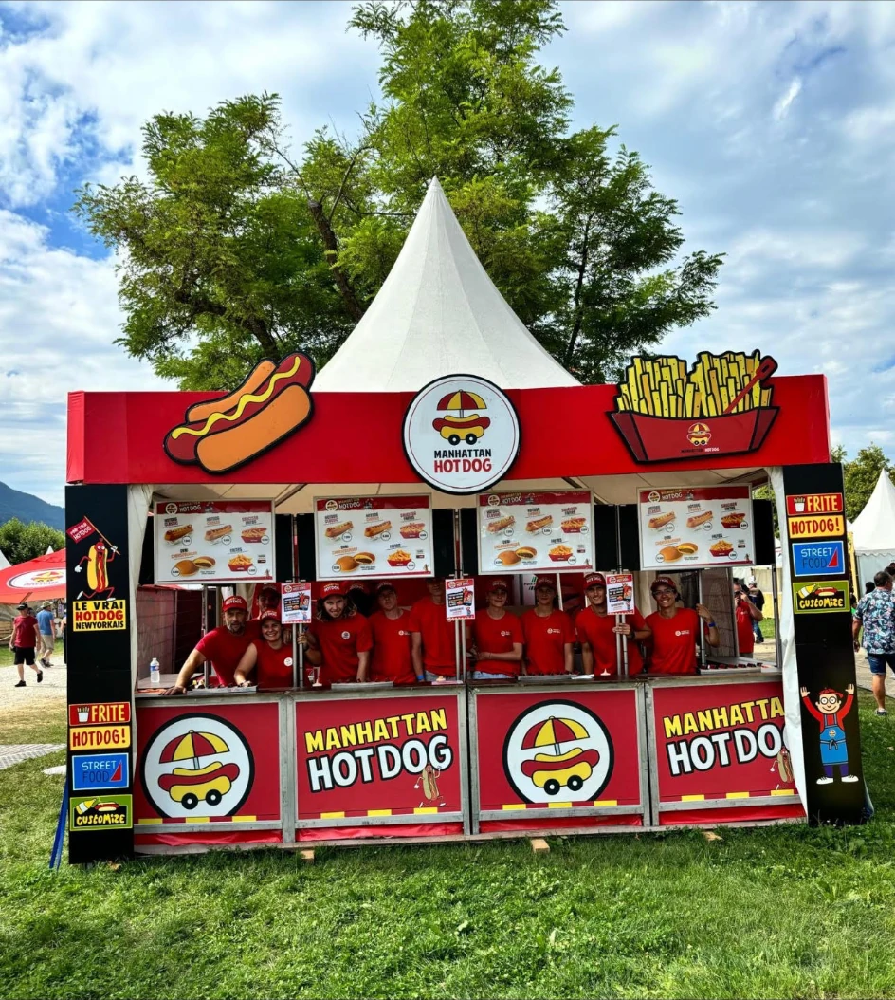

Agoraé
Expérience client, solidarité et transmission.


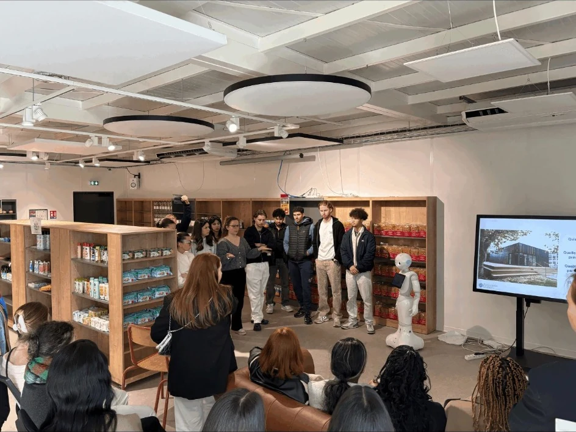
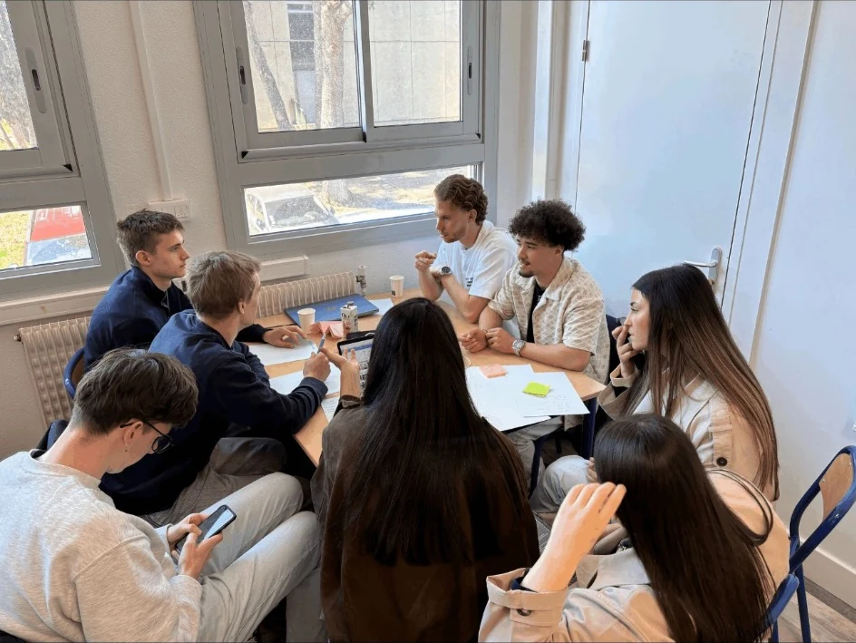

Négociation & outils
Mises en situation et écosystème digital.


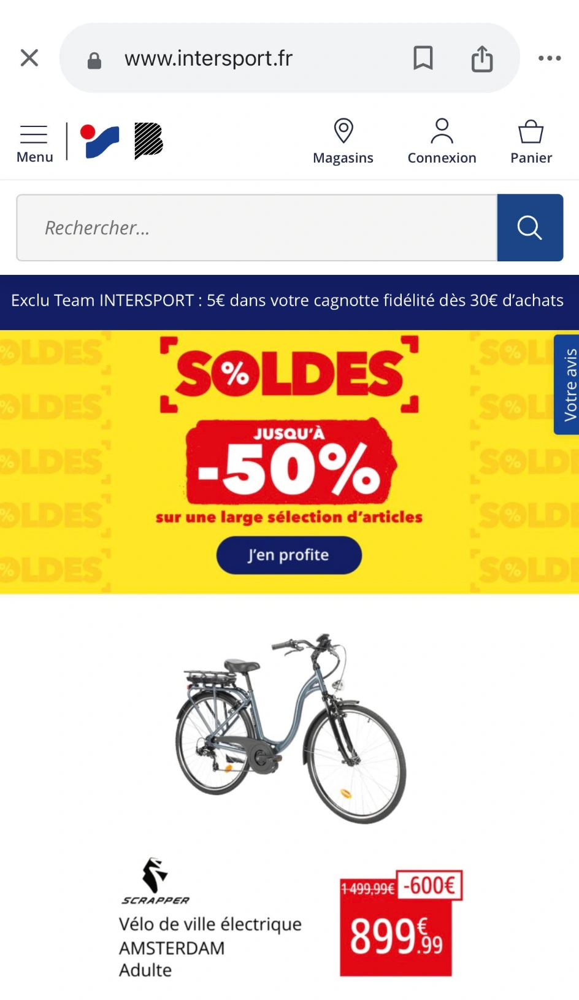
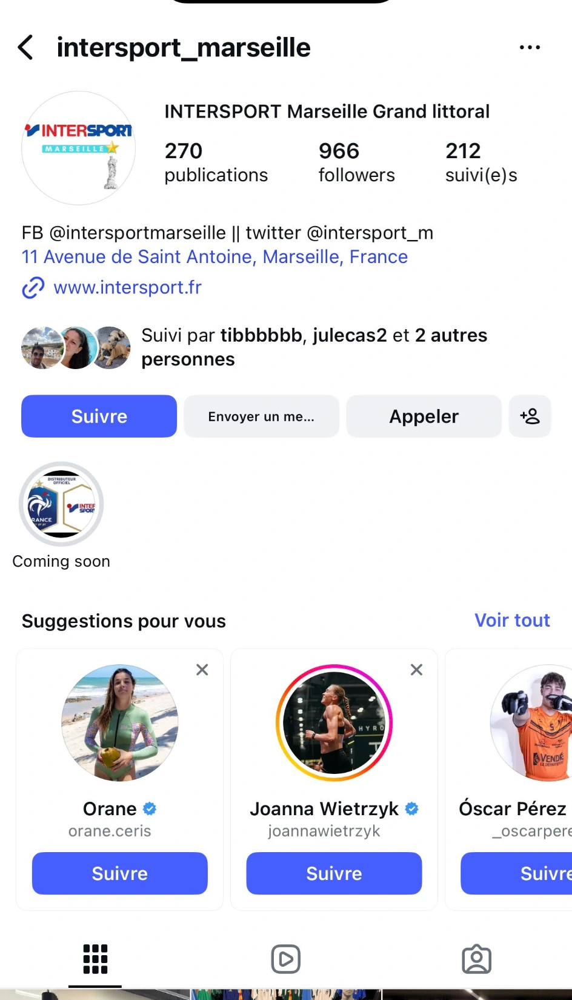

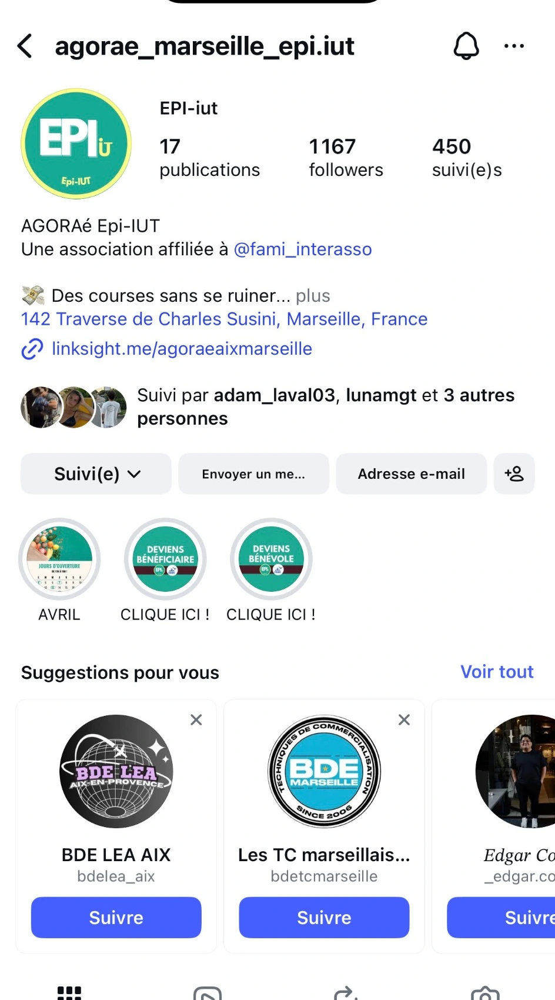